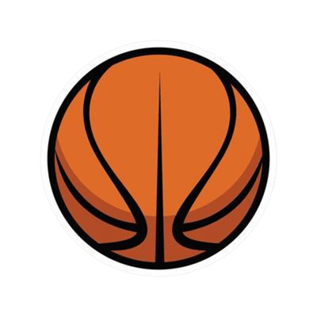

Tudo surgiu com uma ideia de uma pessoa muito apaixonada pelo esporte da bola laranja. Desde cedo, a paixão pelo basquete não apenas moldou sua vida, mas também inspirou a criação da nossa loja, SlamDunk. Com o desejo de compartilhar essa paixão com outros entusiastas, decidimos criar um espaço onde os fãs de basquete pudessem encontrar os melhores produtos relacionados ao esporte.
Nossa jornada começou com a simples ideia de oferecer produtos que combinassem qualidade, estilo e a verdadeira essência do basquete. Desde o início, nosso objetivo tem sido proporcionar uma experiência de compra única, onde cada item reflete a dedicação e o amor pelo jogo.
Na SlamDunk, acreditamos que o basquete é mais do que um jogo; é uma paixão que une pessoas e inspira sonhos. Cada produto em nossa loja é selecionado com cuidado para garantir que nossos clientes possam expressar sua própria paixão pelo esporte, seja através de uma nova jersey, acessórios ou equipamentos.
Nosso compromisso vai além de oferecer produtos de alta qualidade. Buscamos também construir uma comunidade de fãs de basquete, onde todos se sintam parte de algo maior. Estamos sempre à procura de maneiras de melhorar e crescer, ouvindo nossos clientes e adaptando-nos às suas necessidades.
Agradecemos por fazer parte da nossa jornada e por apoiar a SlamDunk. Esperamos que nossos produtos e nossa história inspirem você tanto quanto o basquete nos inspirou a criar este espaço.
Seja bem-vindo à SlamDunk Store, onde a paixão pelo basquete nunca para!
